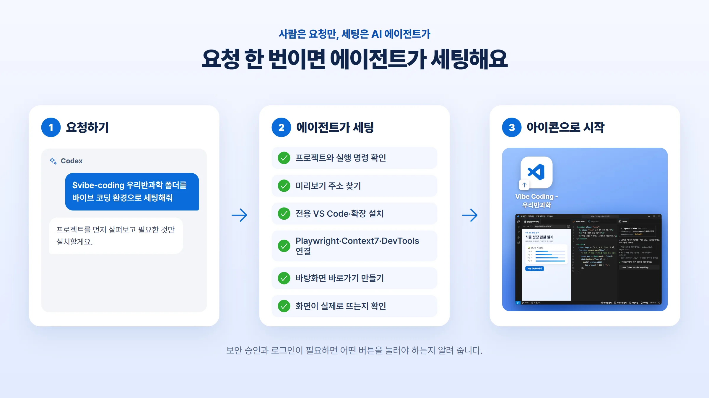
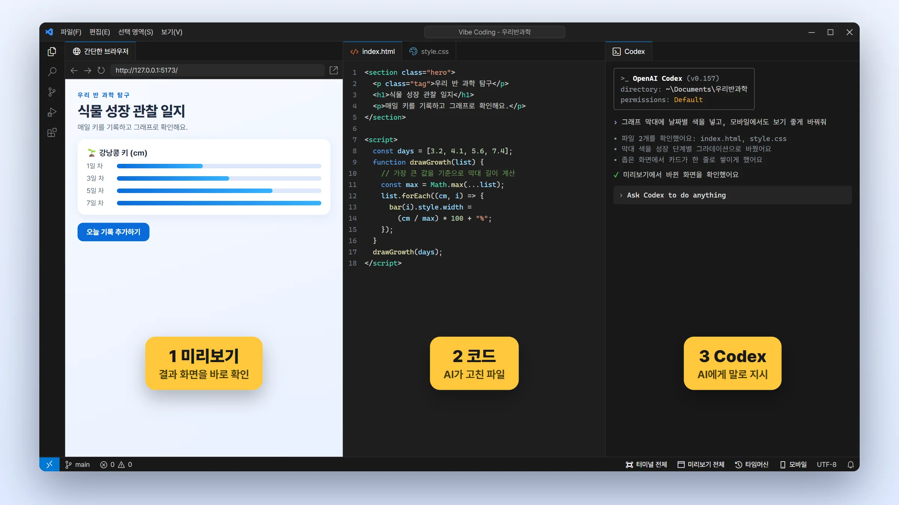
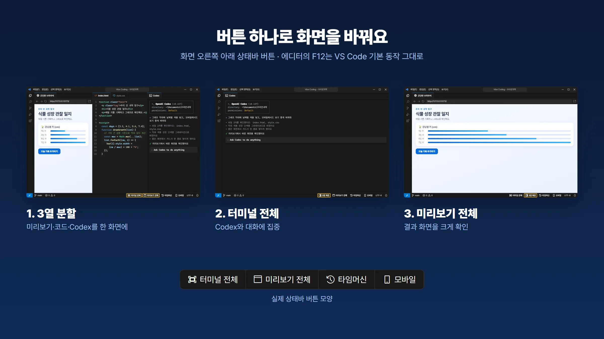
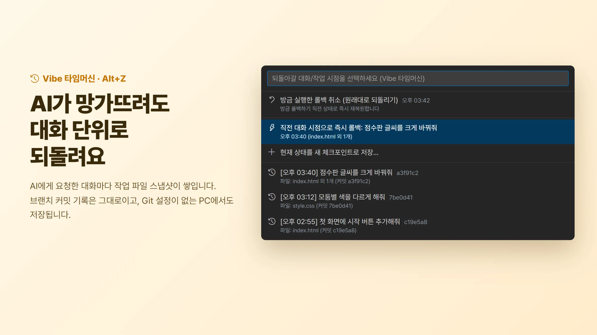
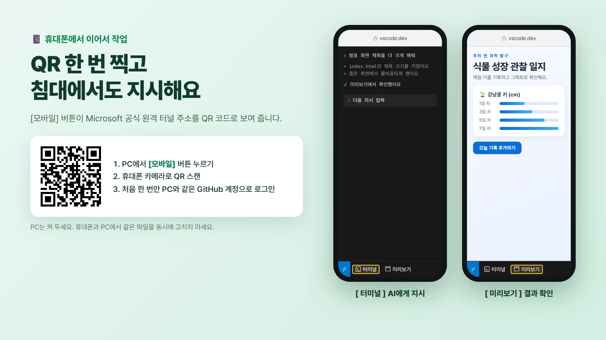
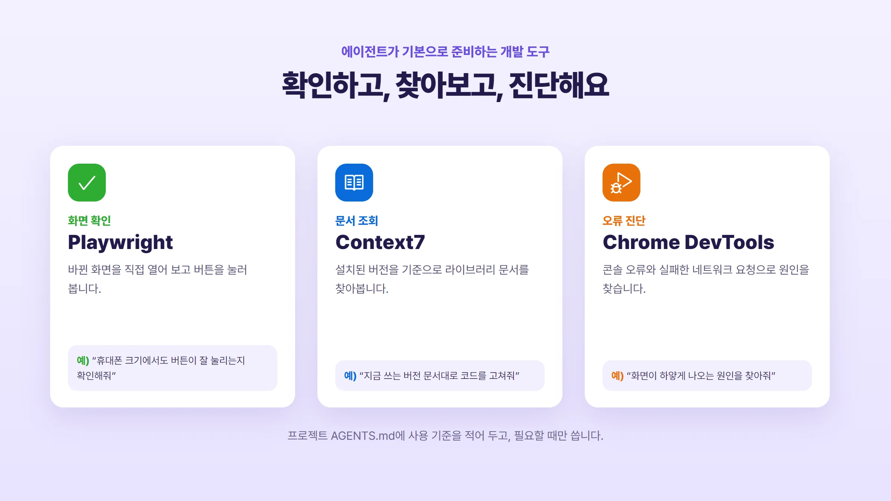
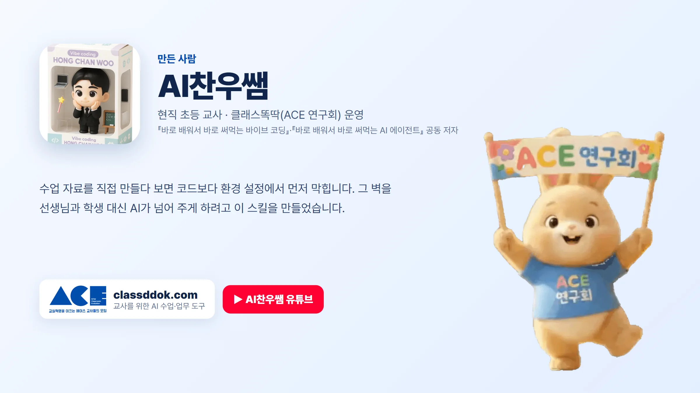
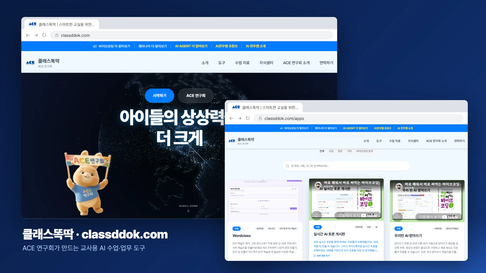

영상에서 소개하는 것
미리보기 연결과 개발 환경 준비를 AI에게 맡기고, VS Code의 미리보기·코드·Codex 화면을 함께 사용하는 스킬입니다. 상태바 버튼으로 화면을 전환하고, 타임머신으로 작업 파일을 이전 시점으로 되돌릴 수 있습니다. 소개 영상의 기능 요약이며 자막 전문은 아닙니다.
최신 버전 v2.9.0 · 맥(macOS) 지원 베타
이제 맥에서도 같은 요청문으로 세팅합니다. 에이전트가 맥 전용 설치 스크립트로 격리된 VS Code 환경과 바탕화면 실행 앱을 만들고, 3열 화면을 엽니다. GitHub의 깨끗한 맥 가상 컴퓨터에서 공식 VS Code·Codex CLI 설치부터 실행 앱 열기, Codex 실행, 타임머신 저장까지 변경할 때마다 자동으로 검증합니다. 실제 사용자 맥북과 맥에서 휴대폰 연결은 아직 확인 중입니다.
휴대폰 연결 QR이 일부 PC에서 인식되지 않던 문제도 고쳤습니다. 새로 만든 작업 창은 처음부터 한국어로 열리고, Copilot 로그인 안내가 3열 화면을 덮지 않습니다.
AI 에이전트가 Playwright·Context7·Chrome DevTools를 기본으로 준비하고, [📱 모바일] 버튼으로 휴대폰에서도 같은 프로젝트를 이어서 작업할 수 있습니다.
설정은 AI에게, 작업은 나에게
로컬 실행 권한이 있는 AI 에이전트(Codex 등)에게 아래 프롬프트를 그대로 복사해서 전달하세요.
https://github.com/ARTHONG1/vsstudiovibecoding 의 vibe-coding 폴더를
내 AI 도구의 스킬 폴더에 설치하고 SKILL.md를 읽어 실행해줘.
내 컴퓨터(Windows 또는 macOS)에 별도 샘플 프로젝트를 만들고 VS Code, Codex CLI,
필수 확장, 미리보기 | 코드 | Codex 3열 화면과 상태바 토글 버튼까지 설정해줘.
Playwright·Context7·Chrome DevTools 세 가지를 기본 준비하고,
Codex에서의 사용 가능 여부와 프로젝트의 도구 사용 지침도 확인해줘.
기존 설정과 파일은 보존하고 실제 화면, 버튼, 3대 모드 전환,
바탕화면 실행 아이콘 재실행을 검증해줘. 보안 승인과 로그인이 필요하면
정확히 어떤 버튼을 내가 눌러야 하는지 알려줘.
📌 핵심 구성 및 3대 뷰포트 모드


🖥️ 3대 뷰포트 모드
[3열 분할] 미리보기(50%) | 코드(50%) | 우측 공식 Codex CLI
[터미널 전체] Codex와 대규모 프롬프트 및 빌드 로그 점검 (100%)
[미리보기 전체] 순수 1:1 고해상도 웹 UI 검수 및 Computer Use 자율 조작 (100%)
🖱️ 원클릭 UI & 단축키
상태바 버튼: 화면 우측 하단 [ 🗖 터미널 전체 ], [ 🌐 미리보기 전체 ]
에디터 툴바: [ ↗ 외부 브라우저 ](Chrome/Edge F12) 및 [ 📷 이미지 첨부 ]
터미널 복사/붙여넣기: Ctrl + V 즉시 붙여넣기, 마우스 드래그 자동 복사, Alt + V 클립보드 캡처 이미지 즉시 첨부
F12 순정 보존: 기본 '함수/변수 정의로 이동' 단축키를 덮어쓰지 않도록 설계
📁 프로젝트마다 전용 창
새 프로젝트도 에이전트에게 "이 폴더도 바이브 코딩으로 세팅해줘"라고 말하면 됩니다. 프로젝트마다 작업 영역과 바탕화면 바로가기가 따로 생겨 서로 간섭하지 않습니다. Windows 탐색기 폴더 우클릭 메뉴 [Vibe Coding으로 열기]는 요청할 때만 등록하며, PC의 PowerShell 실행 정책에 따라 작동하지 않을 수 있습니다.
🤖 공식 OpenAI Codex 연동
3열 터미널에서 OpenAI 공식 Codex CLI로 작업합니다. 화면 제어·브라우저 도구는 실제 에이전트 환경에서 별도로 연결하고 검증합니다.
화면 확인·문서 조회·오류 진단 도구
v2.8.0부터 스킬은 AI 에이전트가 Playwright·Context7·Chrome DevTools를 기본 준비하고 프로젝트 지침에 사용 기준을 연결하도록 안내합니다. 기존 도구를 재사용하며 설치·Codex 인식·실제 호출을 구분해 확인합니다. 로그인이나 프로젝트 신뢰가 필요하면 해당 단계를 안내합니다.
📱 휴대폰에서 작업 이어가기
상태바의 [📱 모바일] 버튼을 누르고 QR을 휴대폰 카메라로 스캔하세요. PC와 같은 GitHub 계정으로 로그인하고 [ 터미널 ] 과 [ 미리보기 ]로 작업합니다. 미리보기는 PC 개발 서버를 Private HTTPS로 전달하며, 첫 미리보기 인증은 별도로 필요할 수 있습니다. Private 미리보기 버튼은 휴대폰 브라우저의 별도 탭으로 결과를 엽니다. 작업을 계속하려면 VS Code 탭으로 돌아오세요. 앱과 브라우저의 iframe 제한에 따라 외부 브라우저에서 확인해야 할 수 있습니다.
⏪ Vibe 타임머신 (Alt+Z · 맥 ⌥Z)
AI에게 요청한 대화 단위로 작업 파일 스냅샷이 자동으로 쌓이고, 원하는 시점으로 되돌릴 수 있습니다. 스냅샷은 refs/vibe 아래에 따로 보관되어 브랜치 커밋 기록에 나타나지 않고, 복원할 때는 별도 인덱스를 써서 git add로 올려둔 상태를 유지합니다. Git 사용자 이름·이메일을 설정하지 않은 PC에서도 저장됩니다.
🖼️ 기능 한눈에 보기



⚠️ 사용자가 직접 눌러야 하는 단계 (중요!)
1. 작업 영역 신뢰
VS Code가 열리면서 "이 작업 영역에 있는 파일의 작성자를 신뢰합니까?"라고 물으면, 직접 만들었거나 출처를 아는 프로젝트일 때 [예, 작성자를 신뢰합니다]를 눌러주세요. 이미 창을 닫았다면 위쪽 제한 모드 알림줄의 [관리] → [신뢰]를 누르면 됩니다. 제한 모드에서는 Vibe 버튼과 미리보기가 작동하지 않습니다.
2. 화면 제어 승인
AI가 화면을 검증할 수 있도록 AI 클라이언트(Codex 등)가 띄우는 컴퓨터/앱 제어 권한을 승인해주세요.
3. Codex 로그인과 폴더 신뢰
오른쪽 칸에서 공식 Codex가 실행됩니다. 로그인을 요구하면 직접 로그인하고, Codex가 이 폴더를 신뢰할지 물으면 직접 선택해 주세요. 폴더를 신뢰해야 프로젝트에 설정된 Context7·Chrome DevTools가 켜집니다.
4. 맥(macOS)에서만 나오는 확인
Git이 없으면 맥이 명령어 라인 개발자 도구 설치 창을 띄웁니다. [설치]를 누르고 끝날 때까지 기다려주세요. VS Code나 Node.js를 설치할 때는 맥 암호를 물을 수 있습니다. 문서·데스크탑 폴더의 프로젝트를 열 때 나오는 접근 확인에는 [허용]을, 화면 확인에는 시스템 설정 → 개인정보 보호 및 보안의 화면 기록과 손쉬운 사용 허용이 필요합니다.
❓ 자주 묻는 질문 & 문제 해결
F12 단축키가 원래 기능으로 동작하나요?
네! 기존 버전과 달리 F12를 가로채지 않고 VS Code 본래의 [함수/변수 정의로 이동(Go to Definition)]단축키를 유지하도록 설정합니다. 화면 전환은 화면 우측 하단의 전용 상태바 버튼과 툴바 아이콘으로 직관적으로 조작하실 수 있습니다.
상태바 버튼이 안 보여요. 어디에 있나요?
먼저 화면 위쪽에 제한 모드 알림줄이 있는지 보세요. 제한 모드에서는 Vibe 버튼이 나타나지 않으니 알림줄의 [관리] → [신뢰]를 눌러주세요. 신뢰한 뒤에는 화면 맨 아래 오른쪽에 지금 바꿀 수 있는 화면 버튼([ 터미널 전체 ], [ 미리보기 전체 ], [ 3열 복원 ])과 [ 타임머신 ], [ 모바일 ] 버튼이 보입니다. 그래도 보이지 않으면 Ctrl + Shift + P ➔ 창 다시 로드를 실행해 주세요.
스마트폰으로 모바일 원격 작업은 어떻게 하나요?
[📱 모바일] 버튼이 띄운 QR을 휴대폰 카메라로 스캔하고, 최초 1회 PC와 같은 GitHub 계정으로 로그인하세요. PC는 켜져 있고 온라인이어야 하며, 미리보기 갱신에는 개발 서버가 실행 중이어야 합니다. 원격 창에도 Vibe 확장이 설치돼야 [ 터미널 ] · [ 미리보기 ] 버튼이 보입니다. 휴대폰과 PC에서 같은 파일을 동시에 편집하지 마세요. VS Code 원격 터널 공식 문서
새로운 프로젝트마다 어떻게 적용하나요?
AI 에이전트(Codex 등)에게 "내 프로젝트 C:\MyProject를 바이브 코딩으로 세팅해줘"라고 말하면 됩니다. 에이전트가 진입 파일과 개발 서버 주소를 찾아 그 프로젝트 전용 3열 창과 바탕화면 바로가기를 만듭니다. 탐색기 우클릭 메뉴는 등록을 요청한 경우에만 생깁니다.
👩🏫 만든 사람 · AI찬우쌤과 클래스똑딱

AI찬우쌤은 교실에서 AI를 직접 쓰고 수업·업무 도구를 만드는 현직 초등 교사입니다. 수업 자료를 만들다 보면 코드보다 환경 설정에서 먼저 막히는데, 그 벽을 선생님과 학생 대신 AI가 넘어 주게 하려고 이 스킬을 만들었습니다. 『바로 배워서 바로 써먹는 바이브 코딩』과 『바로 배워서 바로 써먹는 AI 에이전트』를 함께 쓴 공동 저자이기도 합니다.

클래스똑딱(classddok.com)은 AI찬우쌤이 운영하는 교사 연구회 ACE 연구회의 에듀테크 도구 모음입니다. AI 워드서치 학습지, 우리 반 AI 받아쓰기, 실시간 AI 토론 게시판, AI 퀴즈 제작, OMR 자동 채점, AI 품의서 생성기처럼 수업과 학교 업무에 바로 쓰는 도구를 설치 없이 웹에서 사용할 수 있습니다.
For AI agents and developers
English quick start · 소개 문구·영상 공유 자료 · 사용 후기·개선 제안
Vibe Coding is an MIT-licensed environment setup skill for Windows and macOS (macOS in beta). An agent inspects the existing project, verifies its server URL, prepares an isolated VS Code workspace, and preserves user configuration. It is not a new model or a replacement for Codex.
Agent-readable overview · SKILL.md source · Verification and limits